CS 194-26 Project 3: Face Morphing
2020 October 11, cs194-26 (Kecheng Chen)
Part 1: Defining Correspondences
I have two original images as following.
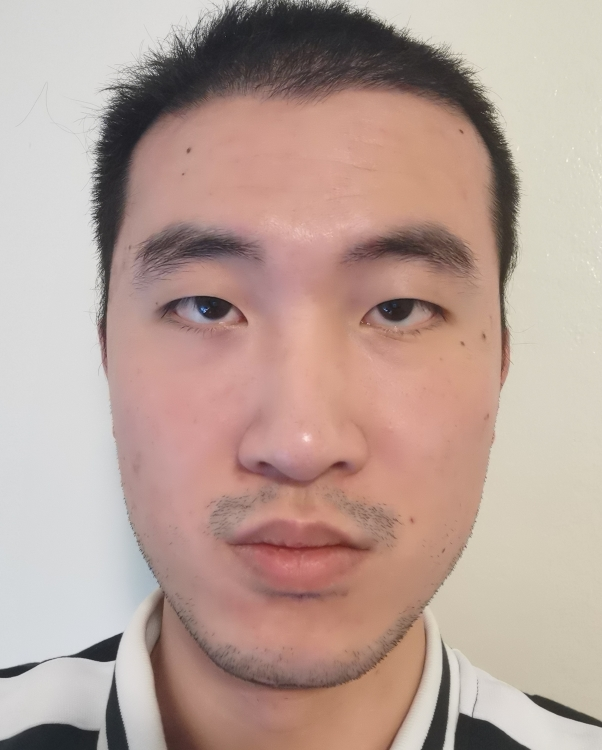
My photo
|
 George
George
|
I used the cpselect (matlab) tool to define pairs of corresponding points on the two images by hand. Also, I used dalaunay function to generate Delaunay triangulation.
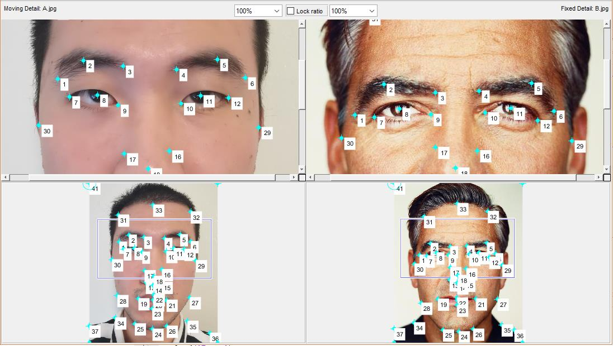
Corresponding points
|
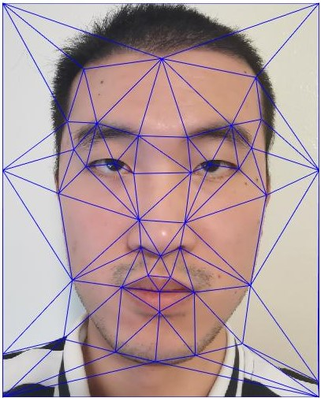
Triangulation1
|
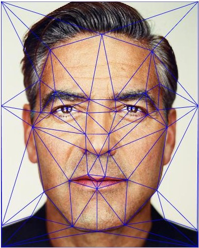
Triangulation2
|
The triangulation at midway shape is computed for the following processing.
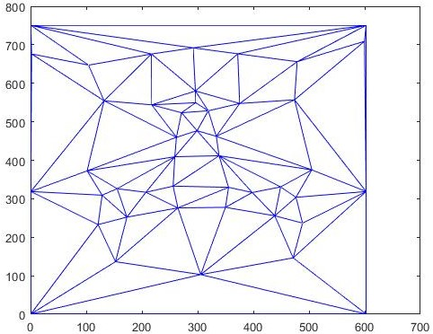
Triangulation at midway shape
|
Part 2: Computing the "Mid-way Face"
I computed average location of keypoint pairs to get average shape, which is shown as the above. There are 6 unknown parameters in the affine matrix, so vertexes of triangulation at midway shape and the corresponding triangulation in two orginal images are used. roipoly function is used to get pixel points in each triangulation. Then use the affine matrix to transform the pixel points' locations(meshgrid). interp2 function is used to do bilinear Interpolation based on two orginal image matrices. Then two warped images (warp to the middle shape) are got. Compute the average color to get "Mid-way Face".
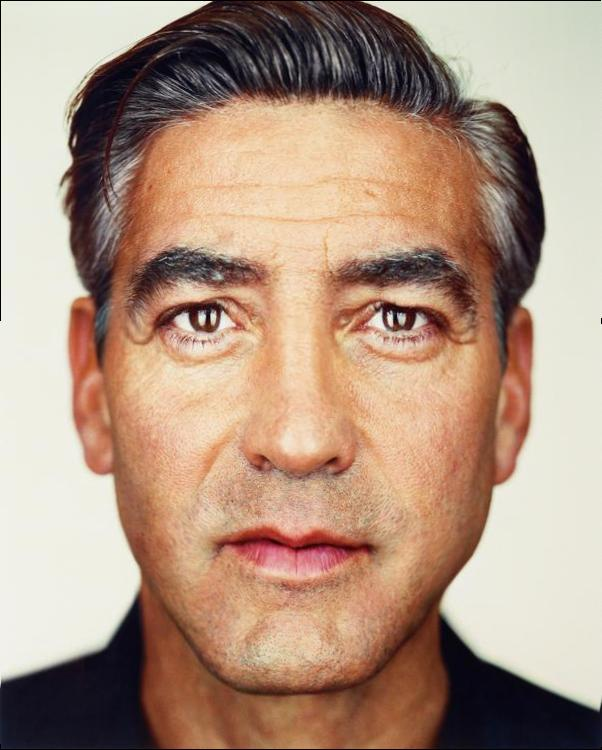
warp1
|
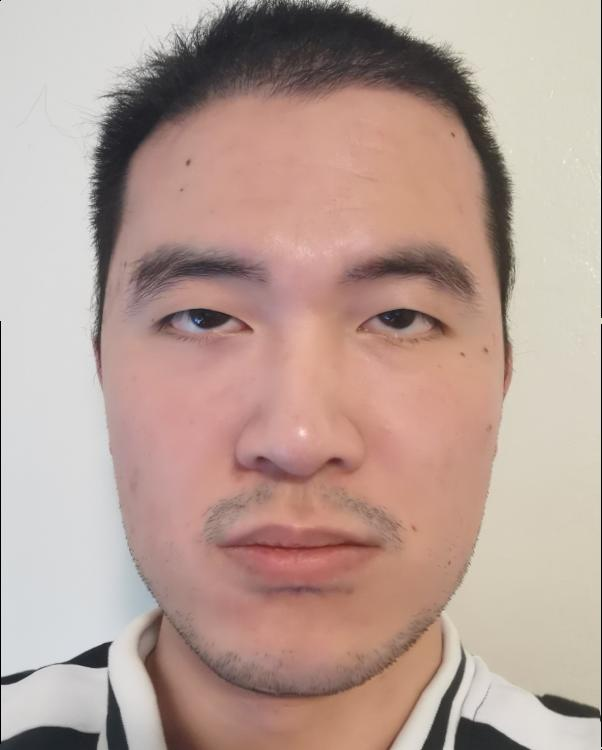
warp2
|
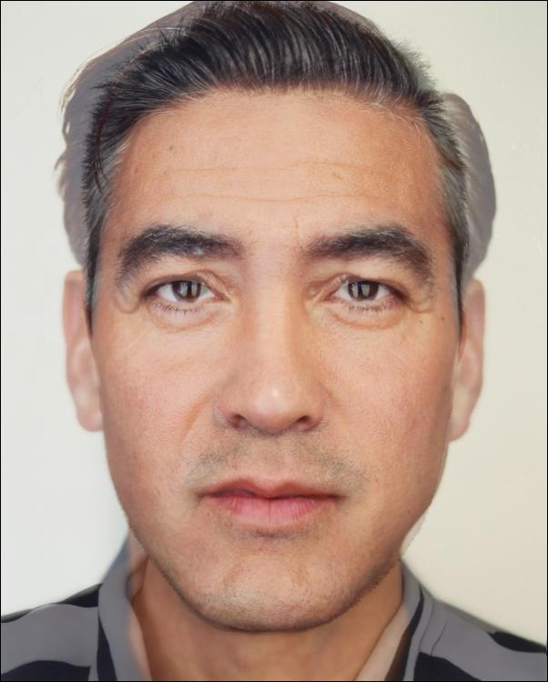
Mid-way Face
|
Part 3: The Morph Sequence
Two parameters warp_frac and dissolve_frac are kept the same to generate the morphing process. The way to write the image morphing function is the same as the part 2.
Part 4: The "Mean face" of a population
Here I used face images and corresponding keypoints from FEI Face Database. Portrait datasets with and without smile both have 200 images.
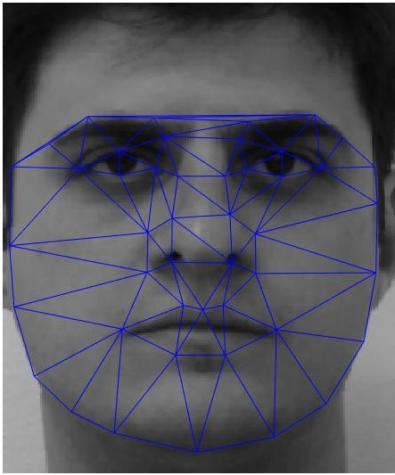
Face without smile
|
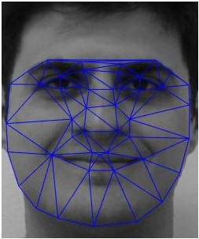
Face with smile
|
I computed the average smile face shape (contain both man and woman).
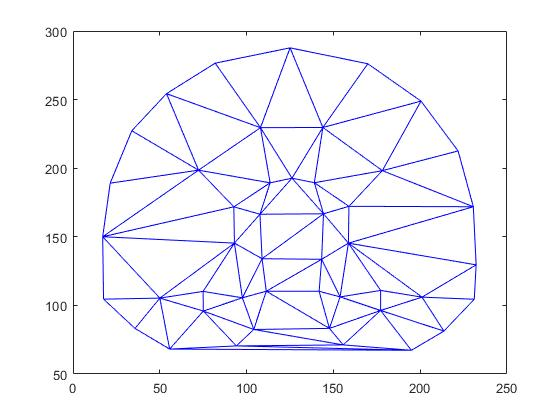
Average smile face shape
|
Then morph each of the faces in the dataset into the average shape.
Org1
|
Morph1
|
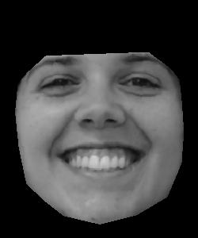
Org2
|
Morph2
|
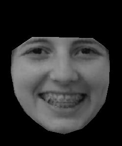
Org3
|
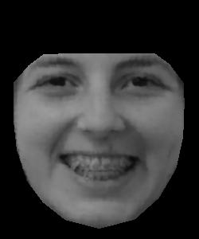
Morph3
|
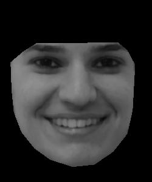
Org4
|
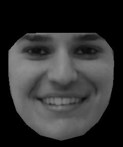
Morph4
|
For the the average face of the population, i first did the naive average. The effect is pretty bad.
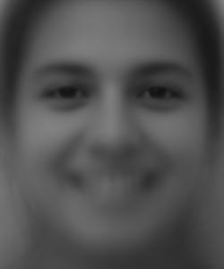
Naive average smile face
|
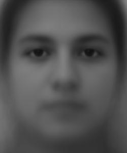
Naive average no smile face
|
Then i computed the average after morphing. The effect is much better.
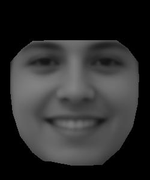
Average smile face
|
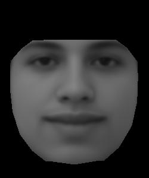
Average no smile face
|
Then I warped my face into the average geometry, and warped the average face into my geometry.
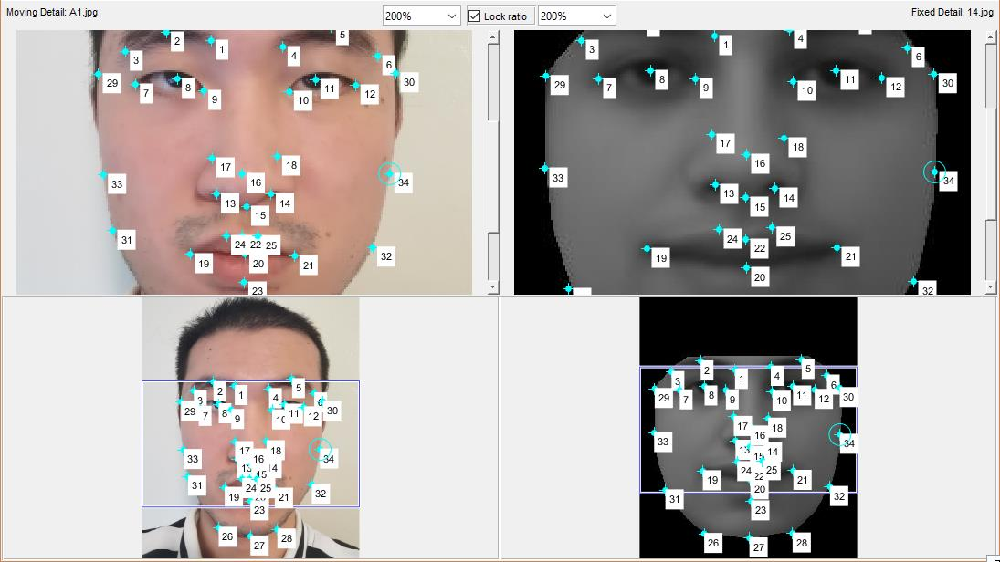
Keypoints
|
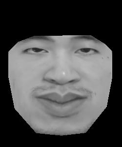
My face to average
|
 Average to mine
Average to mine
|
Part 5: Caricatures: Extrapolating from the mean
I did the extrapolation from the population mean, using the function alpha*my_face_shape+(1-alpha)*average_face_shape, where alpha is larger than 1 or smaller than 0.
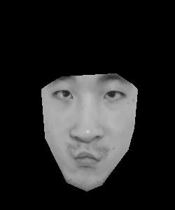
alpha=-0.5
|
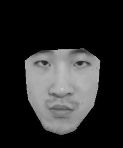
alpha=-0.2
|
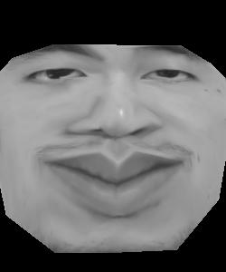
alpha=2
|
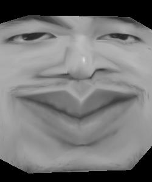
alpha=3
|
Part 6: Bells and Whistles
I took three Trump's images from different ages to make a morphing gif. I defined two groups of keypoints for each pair.
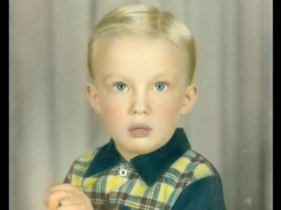
Trump1
|
Trump2
|
Trump3
|
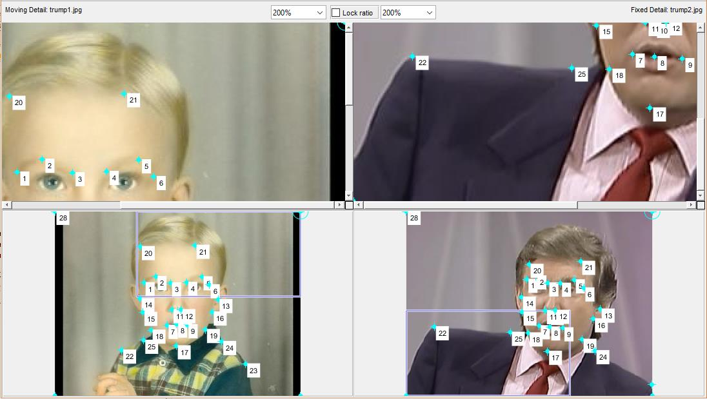
Keypoints
|
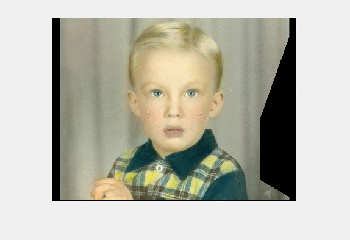
Trump age progressing
|
I used 200 no smile images to form a matrix, rescale the matrix and did PCA. First 6 columns of left eigenvector matrix is shown below. First one should represent the background. Eigenvalues are decreasing correspondingly. Sum of the first six eigenvlues is only 38.03% sum of all eigenvalues. It needs more than 170 eigenvalues so that the sum would be larger than 95%
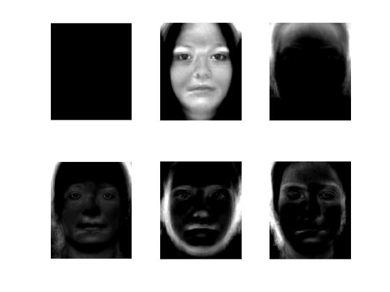
First 6 columns of matrix U
|